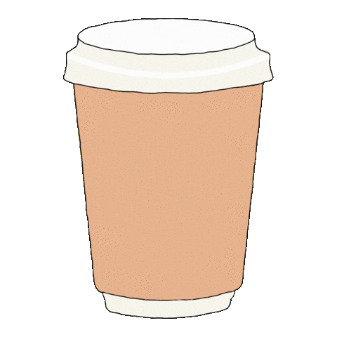

Mikael David
Desenvolvedor web front-end
-

- 
Sobre
Oi! Sou Mikael David, um entusiasta da programação e estudante de Ciências da Computação na Estácio de Sá.
Desde 2021, venho explorando o mundo da programação, começando com Kotlin e Flutter para o desenvolvimento de aplicativos móveis. Atualmente, estou me dedicando ao desenvolvimento web, com foco no front-end. Tenho experiência em projetos pessoais, onde desenvolvi aplicativos Android e trabalhei em pequenos projetos web. Além da programação, adoro jogar jogos de computador, assistir séries e viajar. Sou uma pessoa curiosa e apaixonada por aprender. Meu objetivo é aplicar meu conhecimento e habilidades técnicas para criar soluções web criativas e impactantes. Estou animado para compartilhar meus projetos e contribuir para desafios empolgantes.